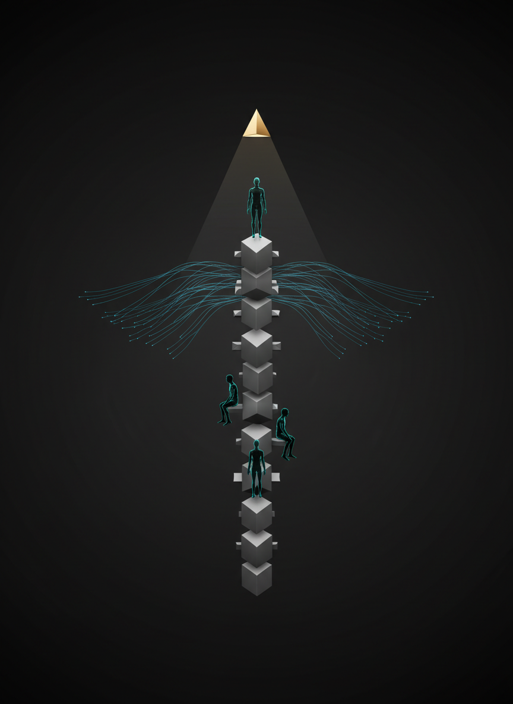

From Java Learner to
Verified Hire.
Not another course library. Not another noisy community. Java Talent Network is a structured growth path where real skill signals become real hiring outcomes.
Choose Your Path
Start where you are. Each path is built around one problem, one benefit, and one next step.
Java Developer
Problem: Learning effort is invisible to recruiters.
Benefit: Build verified signals that improve role quality.
Apply as DeveloperSenior / Mentor
Problem: Mentoring impact is scattered and unstructured.
Benefit: Guide serious engineers through clear progression paths.
Apply as MentorRecruiter
Problem: Resume keywords do not reflect real capability.
Benefit: Discover candidates through validated skill signals.
Apply as Hiring PartnerWhy Current Platforms Fail Java Professionals
Content overload without direction. Engineers consume endlessly but cannot map progress to better roles.
Community noise without accountability. Advice is available, but feedback loops are inconsistent and hard to trust.
Hiring filters without signal quality. Recruiters screen resumes, not validated engineering capability.
How Java Talent Network Works
Three steps. No jargon.
Step 1
Signal
Developers follow role-based paths and complete practical milestones aligned with modern Java work.
Step 2
Validation
Mentors review output, provide structured feedback, and confirm skill signals based on implementation quality.
Step 3
Discovery
Recruiters discover verified candidates through visible skill signals, not generic keyword matching.
What We Are
- Role-based Java growth pathways with mentor checkpoints
- Verification logic tied to implementation quality
- Career progression mapped to hiring visibility
What We Are Not
- Not a random content dump with no progression
- Not a chat-only community with no accountability
- Not a resume database driven by keyword filtering
Trust & Credibility
- Founder-led initiative with direct community access
- Early-stage platform with a focused founding cohort model
- Verification designed around practical, reviewable outcomes

Man Behind the Vision: Rangaswamy
This initiative is built to give back to the Java community. The focus is simple: help engineers grow with structure, stay updated with modern practices, and move into better roles with confidence.
Connect with RangaswamyApply To The Founding Cohort
If you are a developer, mentor, or recruiter who wants structured growth and verified outcomes, start here.
Start ApplicationApplication channel: LinkedIn message to founder.